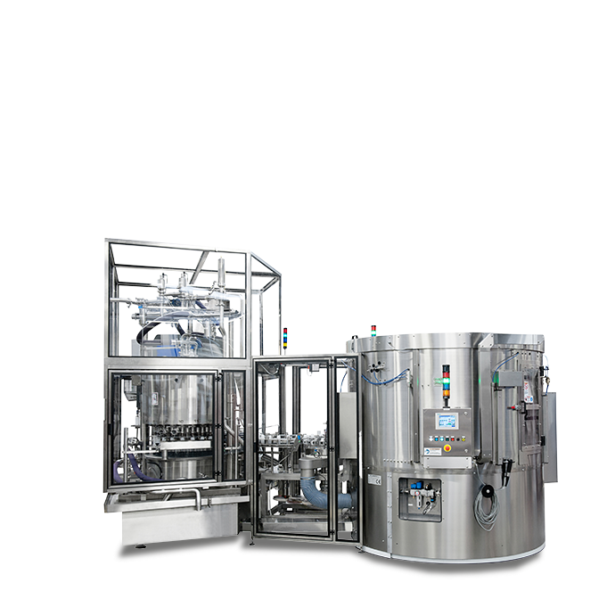

Monobloc remplissage – bouchage – étiquetage
Le monobloc regroupe remplissage et bouchage — voire étiquetage — sur un seul châssis : moins d'espace au sol, synchronisation simplifiée, un seul interlocuteur technique.

Dans beaucoup d'ateliers africains, le mètre carré est cher et l'électricité doit rester simple. Un monobloc réduit les convoyeurs intermédiaires et les sources de désynchronisation. Il convient surtout lorsque le mix produit n'est pas trop fragmenté.
Pour qui ?
- Usines à surface limitée
- Un produit dominant (sauce, huile, lotion)
- Cadence moyenne à haute
- Équipes qui veulent un pilotage unique
| Fonctions | Remplissage + bouchage (+ étiquetage option) |
|---|---|
| Avantage | Emprise réduite, câblage unique |
| Alternative | Ligne modulaire (modules séparés) |
| Produits | Sauces, huiles, cosmétique, entretien |
Monobloc ou ligne modulaire ?
Choisissez monobloc si l'espace et la simplicité priment. Choisissez modules si vous voulez évoluer machine par machine (semi-auto → auto) ou changer souvent de configuration. Le FAQ détaille l'arbitrage.
Intégration électrique et utilités
Un monobloc simplifie l'armoire et les raccordements air/électricité. Moins de points de panne entre machines, moins de réglages de synchronisation. En contrepartie, un changement profond de process peut être moins flexible qu'une ligne modulaire.
Nous validons ensemble l'accès maintenance : portes, extraction des pompes, accès buses. Un monobloc trop fermé devient un cauchemar à nettoyer — le design KIWL privilégie l'accès outil.
Quand le monobloc est le meilleur ROI
Atelier < 80 m², un seul cœur de gamme, cadence 1 500–4 000 bph : le monobloc réduit génie civil et câblage. Les équipes apprennent un seul IHM. Les pièces détachées restent centralisées.
Quand ce n'est pas idéal : multi-produits très différents (huile + détergent agressif), ou roadmap d'automatisation progressive module par module. Dans ces cas, la ligne modulaire KIWL reste préférable.
Maintenance accessible
Portes larges, extraction buses, accès pompes : un monobloc doit se nettoyer vite. Nous refusons les designs « boîte noire ». Demandez la démo de changement de format pendant le FAT pour chronométrer le set-up réel.